Programming, electronics, lifestyle
Наверное это тяга к часам в таком корпусе началась достаточно давно в моём детстве. Я помню, что похожие часы были у моего отца. Кажется он даже дал их мне, а я или разбил или потерял или и то и другое. Чуть в более старшем возрасте, у меня появились знаменитые Montana. И вроде похожая форма и даже куча мелодий, однако мне никогда не нравились: все шильдики были кривые, дешевое поверхностное покрытие итд.
Всего есть несколько моделей часов в таком корпусе которые мне нравятся:
Casio A-159WGEA-1E
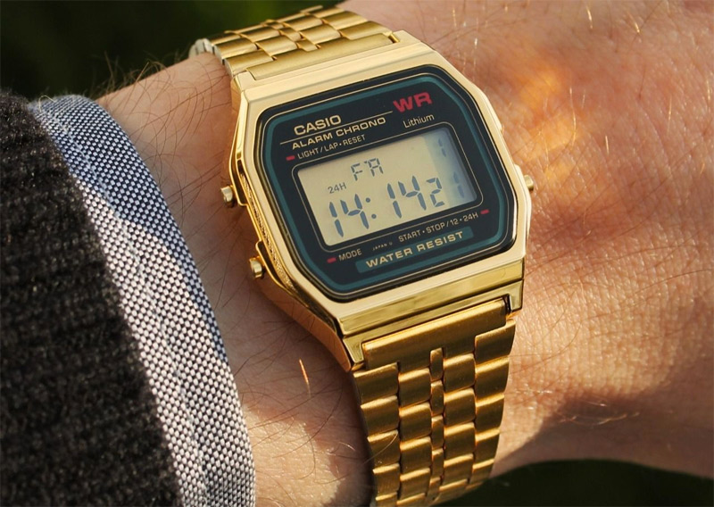
Из крутого в этих часах то, что их до сих пор выпускают и они водонепроницаемые. Кстати, их очень дешево продают на авито. Цена в среднем около 500 рублей, не знаю с чем это связано (мб китай).
Также за богатое наличие функций раньше мне нравились Электроника 55 и Элетроника 77.
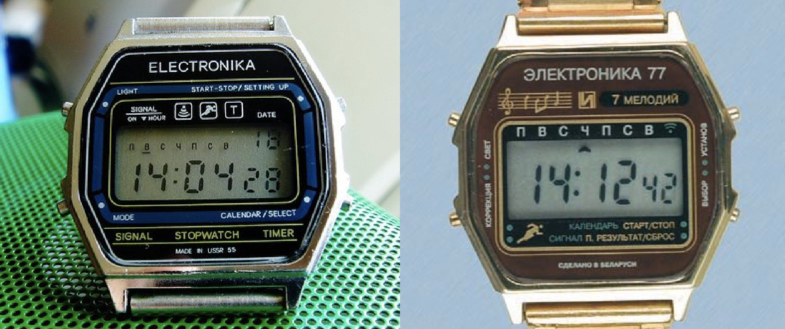
В Самаре есть Птичий рынок, интересен он тем, что там много частников торгуют разной электроникой, инструментами для станков, монетами итд. Мне нравится там шататься выискивая что-то полезное у частников. Я поехал туда 2 августа 2012 года и среди кучи раздолбанных часов увидел часы Электроинка 5 29367 в золотом цвете, со знаком качества и целым экраном, там же взял первый подходящий ремешок золотого цвета, а в переходе метро еще и батарейку. Все это мне вышло в где-то в 200 рублей, что просто смешные деньги. И если честно, я влюбился в эти часы сразу.
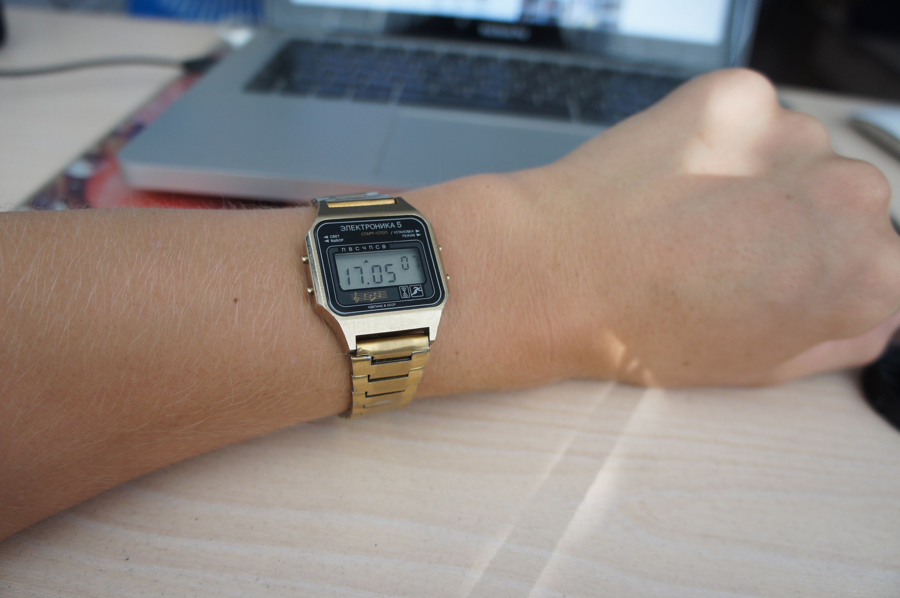
Часы имеют не супер выдающийся набор функций, но для меня это ровно то, что нужно, единственное, что я хотел бы добавить туда – пару мелодий, а то с одной грустно.
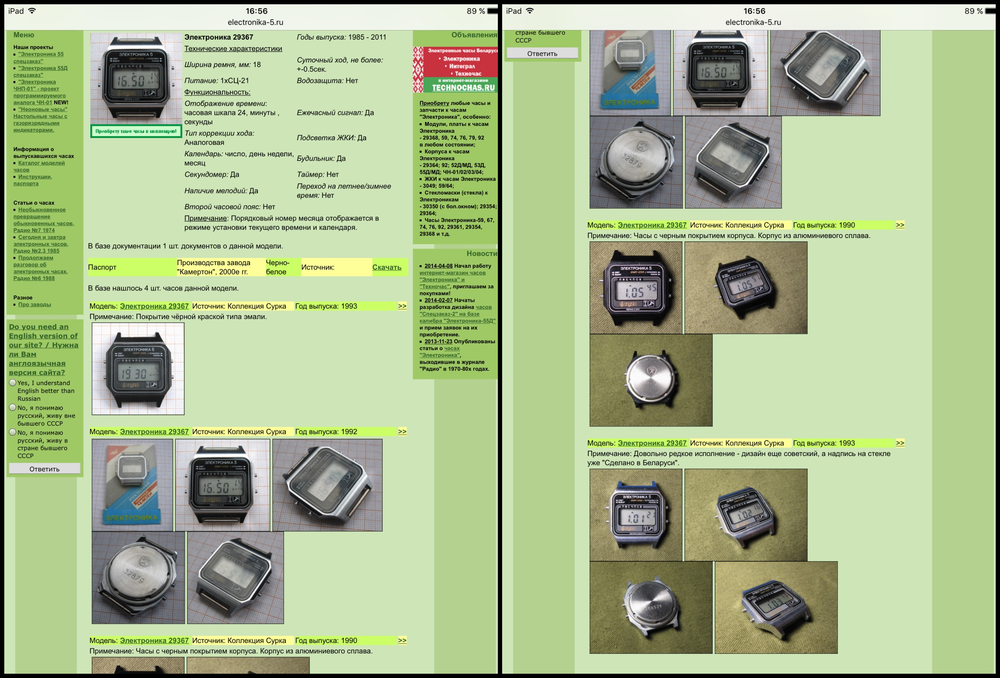
История с корпусом началась в момент, когда через 4 года я разбил стекло.
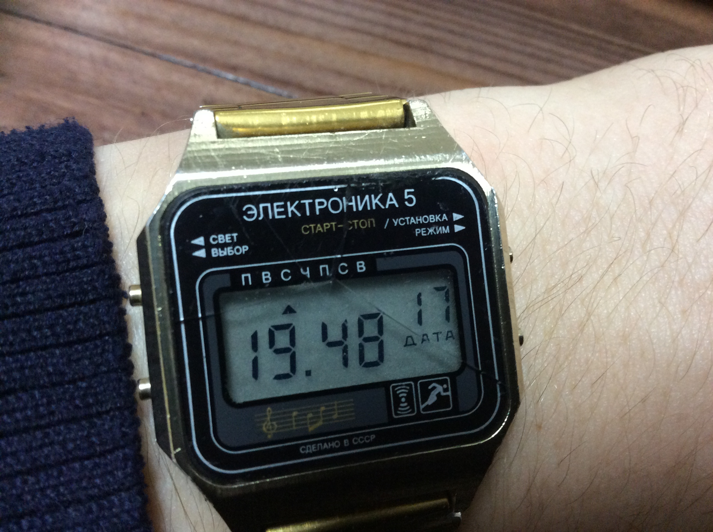
Первая мысль была: «они же советские и их никто уже не выпускает – дело плохо». Я начал думать как мне вырезать стекло и нанести стекломаску. На форумах предлагались различные варианты:
Однако немного поискав по номеру модели 29367 я наткнулся на сайт technochas.ru. И тк заказывать одну маску по сопостовимой с ней цене доставке не выгодно, я взял пару масок (про запас).
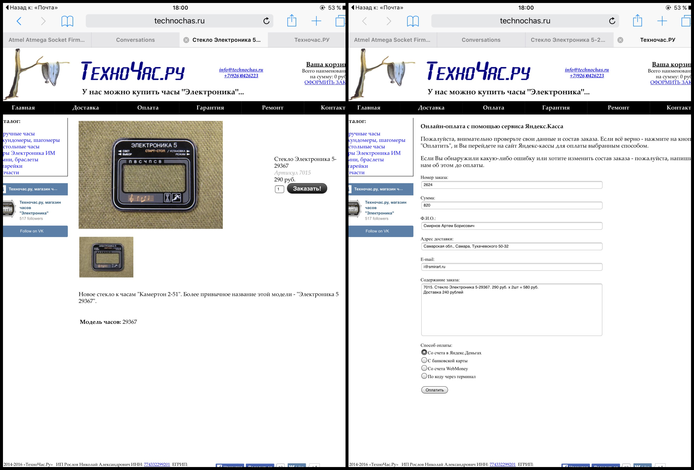
Кстати про Technochas.ru, ребята энтузиасты и большие молодцы – производят часы и части для них до сих пор. Подробнее можете почитать на их сайте.
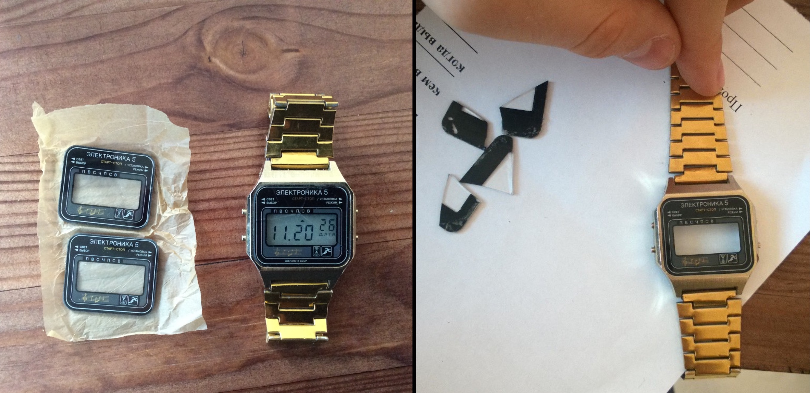
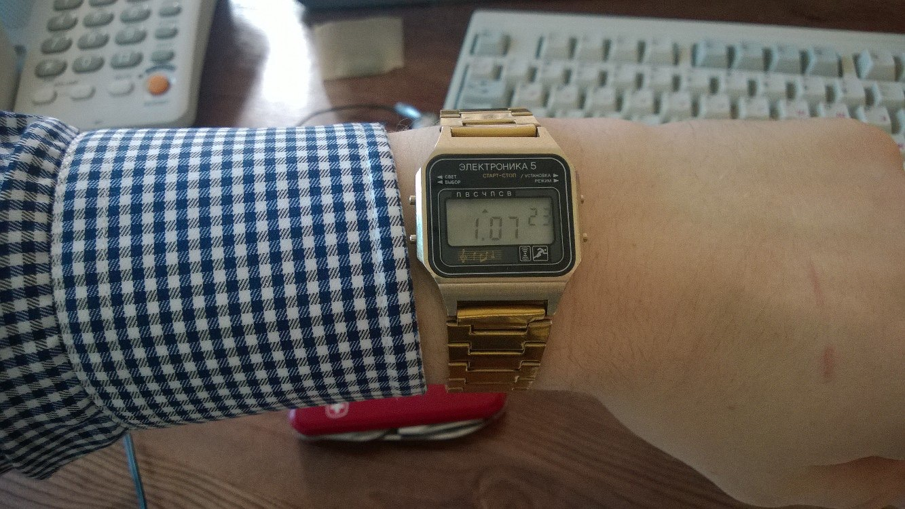
После замены стекла у меня закралась мысль что-то сделать со второй маской, например идеей которая у меня не выходила из головы изготовить корпус из золота. Я попросил свою подругу, сделать 3D модель, она сделала кучу замеров и наложила их на качественную фотографию часов, найденную в интернете.
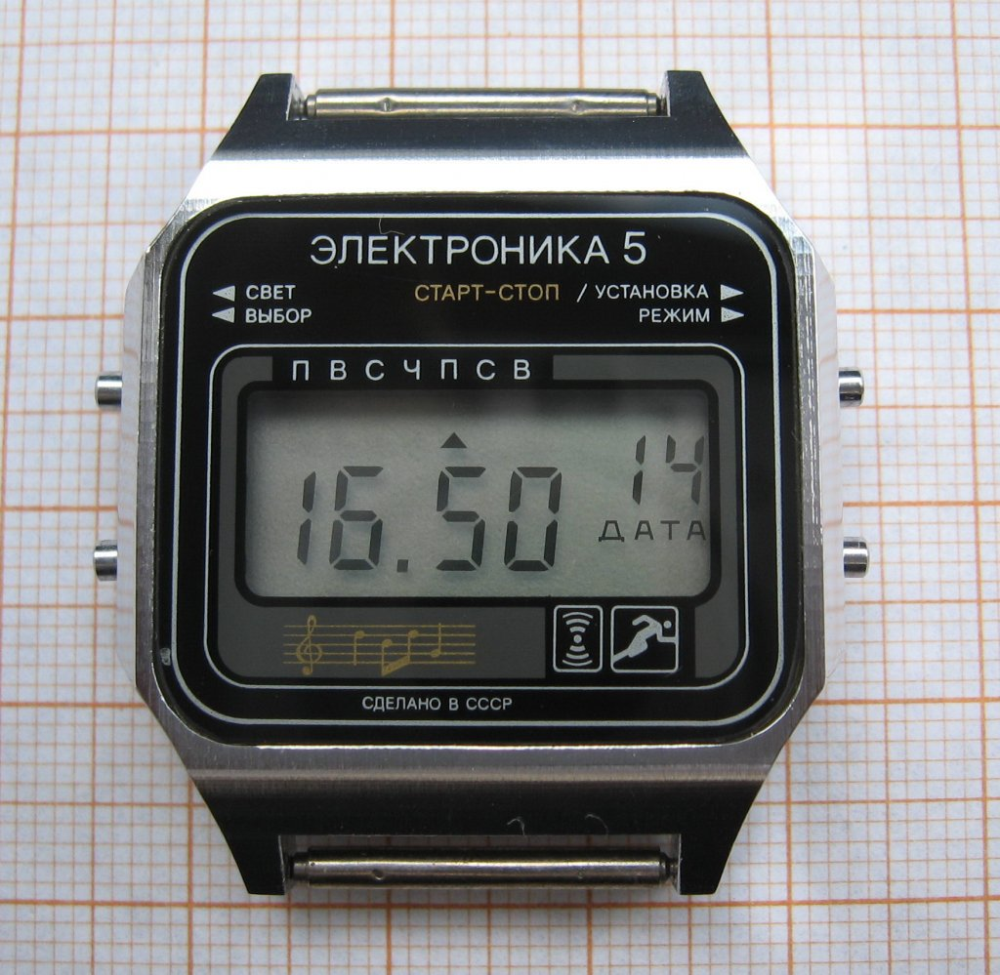
Так получилась первая модель. На тот момент я учился в университете и занимался робототехнической тематикой, среди оборудования у меня в доступе были 3D-принтеры и фрезерный станок. И мы начали делать прототипы из пластика на фотополимерном принтере.
Прототип №1
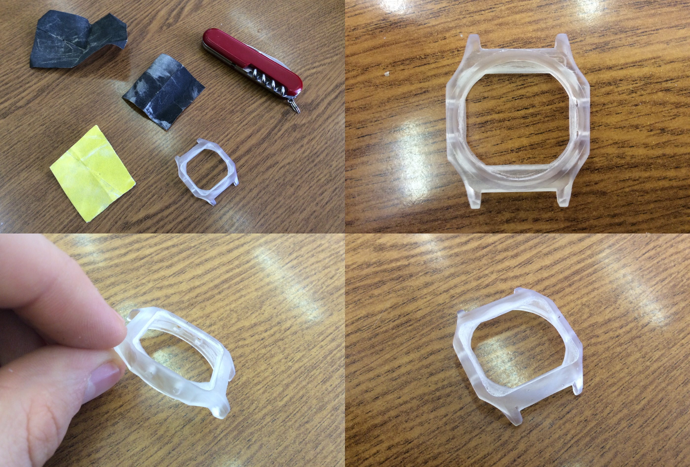
Если увеличить картинку, то на передней стороне будут видны сколы в местах где была поддержка, тк модель была размещена верхней частью к столу принтера.
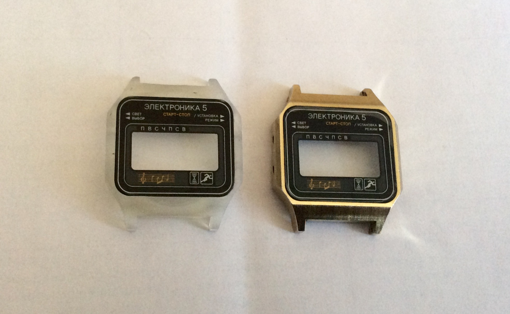
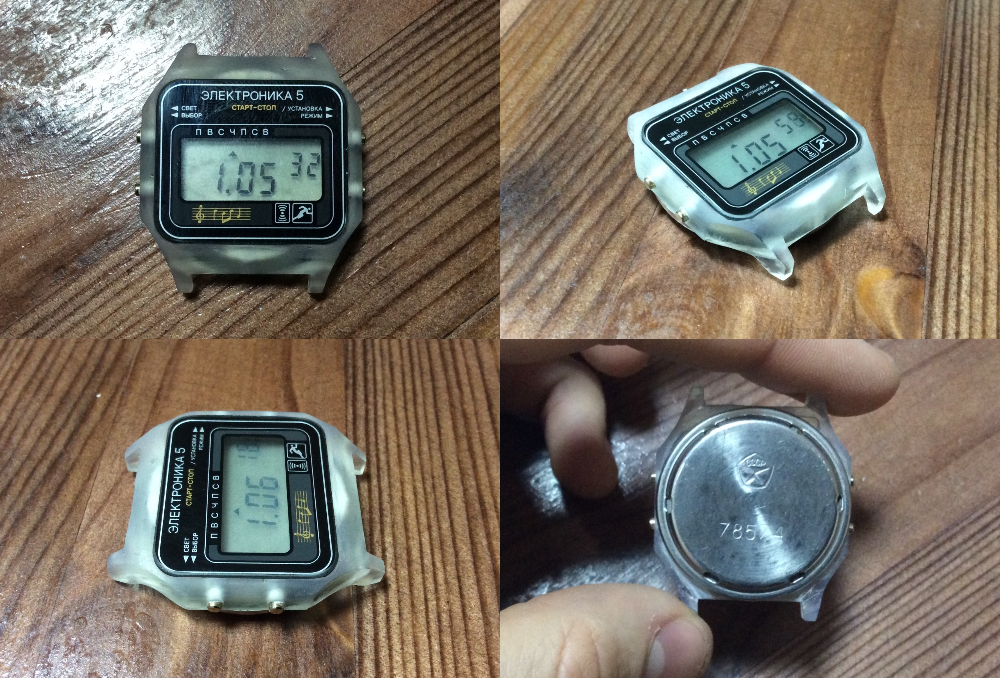
Как видно со стороны, посадка кнопок была не правильной, а также закругление стекла не совпадало с закруглением на корпусе и стекло не утопало на нужную глубину.
Позже пост будет обновлен, добавлю фотки остальных трех прототипов и выложу модель в stl формате.